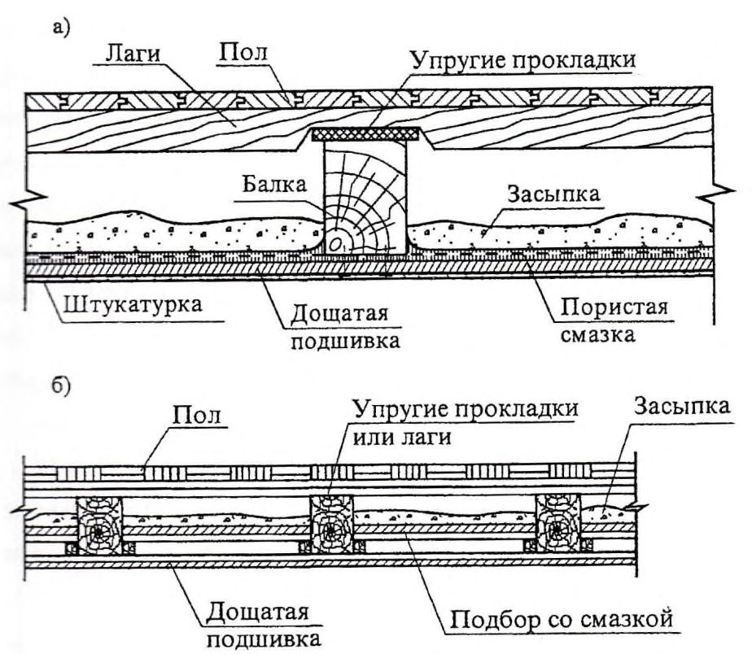
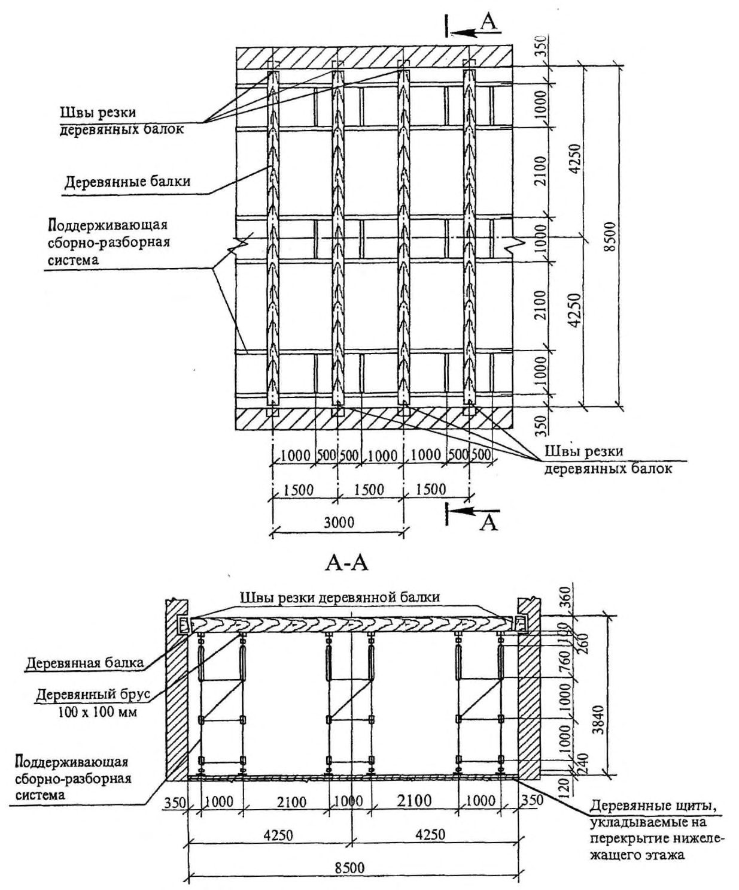
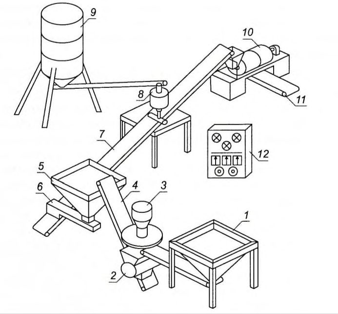
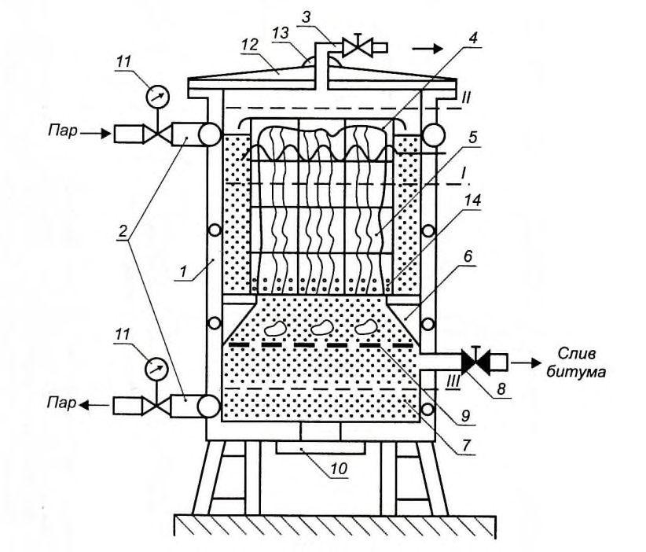

СП 325.1325800.2017 «Здания и сооружения. Правила производства работ при демонта»
О документе: разработчики, утверждение, регистрация, ключевые слова
1 ИСПОЛНИТЕЛЬ - Акционерное общество «Центральный научно-исследовательский и проектно-экспериментальный институт промышленных зданий и сооружений» (АО «ЦНИИПромзданий»)
2 ВНЕСЕН Техническим комитетом по стандартизации ТК 465 «Строительство»
3 ПОДГОТОВЛЕН к утверждению Департаментом градостроительной деятельности и архитектуры Министерства строительства и жилищно-коммунального хозяйства Российской Федерации (Минстрой России)
- 4 УТВЕРЖДЕН приказом Министерства строительства и жилищно-коммунального хозяйства Российской Федерации от 28 августа № 1170/пр и введен в действие с 1 марта 2018 г.
5 ЗАРЕГИСТРИРОВАН Федеральным агентством по техническому регулированию и метрологии (Росстандарт)
6 ВВЕДЕН ВПЕРВЫЕ
В случае пересмотра (замены) или отмены настоящего свода правил соответствующее уведомление будет опубликовано в установленном порядке. Соответствующая информация, уведомление и тексты размещаются также в информационной системе общего пользования - на официальном сайте разработчика (Минстрой России) в сети Интернет
© Минстрой России, 2017
Настоящий нормативный документ не может быть полностью или частично воспроизведен, тиражирован и распространен в качестве официального издания без разрешения Министерства строительства и жилищно-коммунального хозяйства Российской Федерации (Минстрой России)
и
Приложение А Приспособления, оснастка и инвентарь для демонтажа крупнопанельного здания ................................................... Библиография ...................................................................................................
Дата введения - 2018-03-01
1 СТО НОСТРОЙ 2.33.53-2011 Организация строительного производства. Снос (демонтаж) зданий и сооружений
2 МДС 12-64.2013 Типовой проект организации работ на демонтаж (снос) здания (сооружения)
3 СП 13-102-2003 Правила обследования несущих строительных конструкций зданий и сооружений
УДК: 624.05 ОКС 91.040
Ключевые слова: свод правил, организация строительного производства, разборка, снос и демонтаж зданий и сооружений, утилизация, способы разборки, защита людей и окружающей среды
Введение
Настоящий свод правил разработан в соответствии с Федеральными законами от 30 декабря 2009 г. №384-ФЗ «Технический регламент о безопасности зданий и сооружений», от 27 декабря 2002 г. №184-ФЗ «О техническом регулировании», от 29 декабря 2004 г. №190-ФЗ «Градостроительный кодекс Российской Федерации», Постановлением Правительства от 16 февраля 2008 г. №87 «О составе разделов проектной документации и требований к их содержанию».
Свод правил разработан авторским коллективом АО «ЦНИИПромзданий» (д-р техн. наук В.В. Гранев , д-р техн. наук Э.Н. Кодыш , д-р техн. наук Н.Н. Трекин ; канд. техн. наук В.Н. Ягодкин , инженеры В.В. Титова , И.А. Терехов , Д.А. Чесноков ); при участии ООО «ЦНИИОМТП» (д-р техн. наук П.П. Олейник ) .
1Область применения
2Нормативные ссылки
В настоящем своде правил использованы нормативные ссылки на следующие документы:
ГОСТ 12.1.003-74 Система стандартов безопасности труда. Шум. Общие требования безопасности
ГОСТ 12.1.004-91 Система стандартов безопасности труда. Пожарная безопасность. Общие требования
ГОСТ 12.1.012-90 Система стандартов безопасности труда. Вибрационная безопасность. Общие требования
ГОСТ 12.1.046-85 Система стандартов безопасности труда. Строительство. Нормы освещения строительных площадок
ГОСТ 12.2.003-91 Система стандартов безопасности труда. Оборудование производственное. Общие требования безопасности
ПРИ ДЕМОНТАЖЕ И УТИЛИЗАЦИИ
Buildings and construction. Rules for the production of demolition and recycling
ГОСТ 12.2.010-75 Система стандартов безопасности труда. Машины ручные пневматические. Общие требования безопасности
ГОСТ 12.2.013.0-91 Система стандартов безопасности труда. Машины ручные электрические. Общие требования безопасности и методы испытания
ГОСТ 12.3.002-75 Система стандартов безопасности труда. Процессы производственные. Общие требования безопасности
ГОСТ 12.3.020-80 Система стандартов безопасности труда. Процессы перемещения грузов на предприятиях. Общие требования безопасности
ГОСТ 12.4.040-78 Система стандартов безопасности труда. Органы управления производственным оборудованием. Обозначения.
ГОСТ 12.4.059-89 Система стандартов безопасности труда. Строительство.
Ограждения предохранительные инвентарные. Общие технические условия ГОСТ 2787-75 Металлы черные вторичные. Общие технические условия
ГОСТ 22269-76 Система "человек-машина". Рабочее место оператора. Взаимное расположение элементов рабочего места. Общие эргономические требования
ГОСТ 23407-78 Ограждения инвентарные строительных площадок и участков производства строительно-монтажных работ. Технические условия
ГОСТ 24259-80 Оснастка монтажная для временного закрепления и выверки конструкций зданий. Классификация и общие технические требования
ГОСТ 26633-2012 Бетоны тяжелые и мелкозернистые. Технические условия
ГОСТ 30108-94 Материалы и изделия строительные. Определение удельной эффективной активности естественных радионуклидов
ГОСТ 31937-2011 Здания и сооружения. Правила обследования и мониторинга технического состояния
ГОСТ 33715-2015 Краны грузоподъемные. Съемные грузозахватные приспособления и тара. Эксплуатация
ГОСТ Р 12.4.026-2001 Система стандартов безопасности труда. Цвета сигнальные, знаки безопасности и разметка сигнальная. Назначение и правила применения. Общие технические требования и характеристики. Методы испытаний.
ГОСТ Р 53350-2009 Контейнеры грузовые серии 1. Классификация, размеры и масса
ГОСТ Р 54869-2011 Проектный менеджмент. Требования к управлению проектом
ГОСТ Р ИСО 21500-2014 Руководство по проектному менеджменту
СП 15.13330.2012 «СНиП II-22-81* Каменные и армокаменные конструкции» (с изменениями № 1, № 2)
СП 16.13330.2017 «СНиП II-23-81* Стальные конструкции»
СП 17.13330.2017 «СНиП II-26-76 Кровли»
СП 22.13330.2016 «СНиП 2.02.01-83* Основания здания и сооружений»
СП 29.13330.2011 «СНиП 2.03.13-88 Полы»
СП 45.13330.2017 «СНиП 3.02.01-87 Земляные сооружения, основания и фундаменты»
СП 48.13330.2011 «СНиП 12-01-2004 Организация строительства» (с изменением № 1)
СП 63.13330.2012 «СНиП 52-01-2003 Бетонные и железобетонные конструкции. Основные положения» (с изменениями №1, №2)
СП 64.13330.2017 «СНиП II-25-80 Деревянные конструкции»
СП 70.13330.2012 «СНиП 3.03.01-87 Несущие и ограждающие конструкции» (с изменением № 1)
СП 246.1325800.2016 Положение об авторском надзоре за строительством зданий и сооружений
СП 255.1325800.2016 Здания и сооружения. Правила эксплуатации. Основные положения
Примечание - При пользовании настоящим сводом правил целесообразно проверить действие ссылочных документов в информационной системе общего пользования - на официальном сайте федерального органа исполнительной власти в сфере стандартизации в сети Интернет или по ежегодному информационному указателю «Национальные стандарты», который опубликован по состоянию на 1 января текущего года, и по выпускам ежемесячного информационного указателя «Национальные стандарты» за текущий год. Если заменен ссылочный документ, на который дана недатированная ссылка, то рекомендуется использовать действующую версию этого документа с учетом всех внесенных в данную версию изменений. Если заменен ссылочный документ, на который дана датированная ссылка, то рекомендуется использовать версию этого документа с указанным выше годом утверждения (принятия). Если после утверждения настоящего свода правил в ссылочный документ, на который дана датированная ссылка, внесено изменение, затрагивающее положение на которое дана ссылка, то это положение рекомендуется применять без учета данного изменения. Если ссылочный документ отменен без замены, то положение, в котором дана ссылка на него, рекомендуется применять в части, не затрагивающей эту ссылку. Сведения о действии сводов правил целесообразно проверить в Федеральном информационном фонде стандартов.
3Термины и определения
В настоящем своде правил применяются термины, установленные в СП 48.13330, а также следующие термины с соответствующими определениями:
- 3.1бытовой городок (комплекс производственного быта)
- Совокупность зданий и сооружений для создания нормальных производственных и санитарнобытовых условий для работающих на строительной площадке.
- 3.2временная строительная инфраструктура
- Система, включающая постоянные, мобильные и временные здания и сооружения, средства механизации, инженерные сети и т.д., необходимые для организации строительства (реконструкции, сноса (демонтажа)) объекта.
- 3.3временные дороги
- Дороги, прокладываемые на строительной площадке для временных нужд.
- 3.4временные инженерные сети
- Коммуникации, прокладываемые на территории строительной площадки для обеспечения мобильных зданий и производства строительно-монтажных, демонтажных работ.
- 3.5демонтаж (разборка) объекта
- Ликвидация здания (сооружения) путем разборки сборных и обрушения монолитных конструкций с предварительным демонтажем технических систем и элементов отделки.
- 3.6массивная железобетонная конструкция
- Конструкция для которой, отношение открытой поверхности, м² , к ее объему, м³ , равно или меньше 2.Источник: СП 63.13330.2012, пункт 3.15
- 3.7мобильные (инвентарные) здания
- Подсобно-вспомогательные и обслуживающие строительное производство здания, конструктивная система которых предусматривает их многократную оборачиваемость в течение установленного срока службы.
- 3.8ограждение строительной площадки
- Устройство ограждения по периметру строительной площадки или внутри нее для выделения территории и участков производства строительно-монтажных, демонтажных работ.
- 3.9организация складского хозяйства
- Комплекс мероприятий и работ по организации временного хранения материалов, изделий, конструкций и оборудования.
- 3.10снос объекта
- Ликвидация здания (сооружения) одним из способов обрушения (механический, термический, взрывной или их комбинации) с предварительным демонтажем технических систем и элементов отделки.
- 3.11строительный генеральный план (стройгенплан)
- Организационнотехнологический документ, состоящий из графической и расчетной частей, регламентирующих состояние временной строительной инфраструктуры на строительной площадке при возведении, (реконструкции) или сносе зданий и сооружений.
4Общие положения
5Подготовка к сносу зданий и сооружений
- изучение актов, заключений (отчетов) ранее проведенных обследований, имеющейся проектной документации,
СП .1325800.2017
- разработка схем страховочных устройств под несущими конструкциями;
- выявление аварийных участков.
- отключение и демонтаж наружных коммуникаций;
- демонтаж внутренних инженерных систем водоснабжения, газоснабжения, электроснабжения, теплоснабжения, вентиляции, пожаротушения и слаботочного оборудования и приборов;
- разборка полов, окон, дверей и элементов отделки.
Подземные вводы (выпуски) сетей газоснабжения, водопровода и канализации после отключения, демонтируются одновременно с разрушением и удалением фундаментов.
Производится подготовка к демонтажу и демонтаж технологического оборудования: стендов, станков, аппаратов, трубопроводов, мостовых и подвесных кранов. Снимаются все крепежные элементы, контрольноизмерительные приборы, отсоединяются технологические трубопроводы. Оборудование, установленное на железобетонные фундаменты приподнимается (отрывается от опорных площадок) с помощью домкратов или клиньев. Демонтаж оборудования производится в соответствии с требованиями нормативной документации, инструкций и паспортов заводов-изготовителей.
СП 325.1325800.2017 разборки здания (сооружения), утилизации отходов и служит основанием для получения разрешения на производство работ.
- календарный план производства работ, строительный генеральный план или план участка работ по сносу и прилегающих территорий;
- график вывоза с объекта отходов сноса;
- потребность в средствах механизации, технологическом оборудовании, инструментах и приспособлениях;
- технологические карты;
- техника безопасности, охрана труда и окружающей среды.
Утвержденный проект передается на строительную площадку до начала производства работ.
5.12Обязанности заказчика и подрядных организаций
Организация, осуществляющая снос объекта должна:
- получить у заказчика разрешение на снос объекта;
- получить документы (в том числе ордер), позволяющие производить отключение коммуникаций;
- назначить письменным приказом производителя работ, лиц ответственных за пожарную и электробезопасность и лиц осуществляющих строительный контроль;
6Снос и демонтаж конструкций зданий
6.1Общие правила и последовательность сноса зданий
- обеспечивать прочность и устойчивость остающихся опорных конструкций и примыкающих к ним элементов;
- предотвращать падение конструкций при освобождении их креплений (швы замоноличивания, сварка, болты).
6.2Разборка жилых и общественных зданий с кирпичными стенами
Последовательность производства работ:
- разборка кровли;
- разборка кровельного ограждения;
- разборка деревянных конструкций скатных крыш;
- разборка чердачного перекрытия;
- поэтажная разборка наружных и внутренних стен;
- поэтажная разборка междуэтажных перекрытий;
- поэтажная разборка полов;
- поэтажная разборка лестничных маршей и площадок;
- разборка перекрытия над подвалом;
- разборка стен подвала и фундаментов.
6.3Демонтаж несущих и ограждающих конструкций жилых и общественных панельных зданий из сборного железобетона
Последовательность производства работ:
- разборка кровельного покрытия;
- разборка ограждения кровли;
- демонтаж парапетных стеновых панелей;
- поэтажное временное закрепление разбираемых элементов наружных и внутренних стен с помощью специальной технологической оснастки;
- демонтаж панелей покрытия;
- демонтаж панелей перегородок;
- поэтажный демонтаж внутренних и наружных стеновых панелей;
- поэтажная разборка полов;
- поэтажный демонтаж панелей перекрытия;
- разборка сантехкабин и лифтовых шахт;
- демонтаж элементов лестниц и балконов;
- демонтаж плит перекрытия над подвалом;
- демонтаж стен подвала и разборка фундаментов.
6.4Правила демонтажа производственных каркасных зданий (одноэтажных и многоэтажных)
Конструкции связевых блоков разбираются в последнюю очередь.
Демонтаж конструкций многоэтажных зданий производится поярусно, (поэтажно), поэлементно. Производство работ на последующем ярусе разрешается только после полного завершения работ на предыдущем ярусе.
6.5Демонтаж несущих и ограждающих конструкций каркаса одноэтажных производственных зданий (стальных и железобетонных)
Последовательность производства работ:
- демонтаж специальных конструкций (лестницы, смотровые площадки, пандусы, шахты, галереи, рельсовые пути).
- демонтаж фонарей;
- демонтаж кровли;
- демонтаж кровельного ограждения и парапетных стеновых панелей;
- демонтаж несущих конструкций покрытия (профнастил, железобетонные плиты);
- демонтаж прогонов покрытия;
- демонтаж фонарей;
- демонтаж окон, дверей, виражей;
- демонтаж стеновых панелей;
- демонтаж несущих конструкций покрытия (стропильные и подстропильные фермы, балки);
- демонтаж подкрановых балок;
- демонтаж колонн;
- разборка фундаментных балок и фундаментов;
Мероприятия по обеспечению устойчивости конструкций при демонтаже и технологическая остнастка должны содержаться в ППР.
6.6Демонтаж конструкций многоэтажных зданий (стальных и железобетонных)
Последовательность производства работ:
- разборка кровли;
- разборка кровельного ограждения и парапетных стеновых панелей;
- разборка плит покрытия;
- поэтажная разборка полов;
- поэтажная разборка окон и дверей;
- поэтажная разборка перегородок;
- поэтажная разборка стеновых панелей;
- поэтажная разборка плит перекрытия;
- поэтажная разборка ригелей междуэтажных перекрытий;
- поэтажная разборка колонн;
- поэтажная разборка связевых устоев и диафрагм жесткости;
- поэтажная разборка конструкций лестниц;
- разборка фундаментных балок;
- разборка стен подвалов и фундаментов;
6.7Разборка скатных крыш зданий с кирпичными стенами
- снятие кровельного покрытия;
- демонтаж несущих элементов крыши.
- из стальных оцинкованных листов;
- из волнистых хризотилцементных листов;
- из рулонных кровельных материалов;
- из штучных мелких элементов.
- снимаются листы покрытия (фартуки) возле выступающих частей (вентиляционные трубы и другие выступающие части);
- отделяются кляммеры от обрешетки;
- раскрывается один из стоячих фальцев на картину по всему скату кровли;
- отсоединяется лежачий фальц, скрепляющий картину с листами желоба;
- картину поднимают с помощью ломика и переворачивают на соседний ряд.
В такой же последовательности разбирается вся остальная кровля. Разобранные картины скатываются в рулоны и в целях безопасности немедленно опускаются вниз.
6.8Разборка крыш панельных и каркасных зданий
- разборка кровельного покрытия;
- демонтаж парапетных панелей, карнизных блоков и плит покрытия.
Строповку кровельных плит рекомендуется производить с помощью четырехветвевого стропа и четырех захватов, которые устанавливаются в специально просверленные (пробитые) отверстия. Затем краном производится слабый натяг строп и разрезаются металлические связи.
Перед подъемом кровельную плиту поднимают на 20-30 см для проверки надежности строповки. Таким же способом демонтируют парапетные панели, карнизовые блоки и плиты покрытия дома.
6.9Поэтажная разборка элементов междуэтажных перекрытий кирпичных зданий по деревянным (стальным) балкам
Разборка производится сверху вниз в порядке обратном монтажу начиная с дальней точки захватки и включает следующие операции:
- а) дощатых:
- разборка чистых полов и лаг;
- б) паркетных из штучного и щитового паркета:
- удаление звуко-теплоизоляционной засыпки;
- разборка деревянного подбора;
- разборка дощатой подшивки потолка;
- демонтаж балок перекрытия. а чистый пол из шпунтованных досок; б паркетный пол Рисунок 1 - Конструкция перекрытия по деревянным балкам

- снимаются плинтуса и вентиляционные решетки и удаляется одна из фризовых досок;
- последовательно разбираются рядовые доски пола (не повреждая шпунта или гребня и паза);
- после удаления гвоздей доски укладываются в штабель и перемещаются на площадку временного хранения.
Таким же образом разбираются лаги и основания под паркетные полы.
- отбивается штукатурка полосами не менее 200 мм с площадок монтажника по периметру стен помещений на нижележащем этаже в месте примыканий стен к потолку;
- отрываются обрезанные участки подшивки, шириной не менее 1,0 м - с существующих ходовых трапов с помощью ударов ломов по подшивке у балок;
- производится дальнейшая разборка подшивки с помощью ломиковгвоздодеров на отдельные доски - с площадок монтажника;
- доски пакетируются и удаляются с помощью башенного крана на площадку временного хранения - после удаления или загиба гвоздей.
- балки перекрытий при работоспособном техническом состоянии стропятся, затем распиливаются у опор (стен) и удаляются с помощью крана на площадку временного хранения,
- в случае, если балки значительно повреждены гнилью или грибком, они дополнительно распиливаются в середине пролета.
Работы по разборке выполняются в следующей последовательности:
- балка подпирается переставной сборно-разборной поддерживающей системой в трех местах - у опор (стен) и в середине пролета (рисунок 2);
- освобождаются концы балок в стенах с помощью пневматического молотка;
- металлические анкеры на концах балки отгибаются в сторону с помощью ломов и молотков;
- выполняются поперечные перепилы балок;
- балки стропятся и удаляются на площадки временного хранения.
Рисунок 2 - Схема разборки междуэтажного перекрытия по деревянным балкам

Пространственная жесткость и устойчивость здания после разборки перекрытия обеспечивается сохранением каждой четвертой балки перекрытий, заделанных и заанкеренных в стену, по которым устанавливаются стальные подкосы.
Материалы, полученные в результате разборки перекрытий могут использоваться повторно, например, при возведении временных зданий.
- настил пропитывается антипиреном или в местах резки накрывается металлическими или хризотиловыми листами;
- на рабочем месте устанавливают емкость с водой и огнетушитель;
- концы балок, нагретые после резки, охлаждают водой.
6.10Поэтажный демонтаж сборных железобетонных плит и стеновых панелей
- в местах строповки сверлятся отверстия диаметром 40-60 мм;
- стыки и швы между плитами освобождаются от бетона замоноличивания способами, указанными в технологической карте.
После этого плиты стропятся кольцевыми стропами, отрываются с помощью подклинивания гидроклиньями или домкратами от опорной плоскости, а после проверки надёжности страховки, поднимаются и переносятся на площадку складирования.
- выполняется временное закрепление панелей на захватке с помощью подкосов,
- в панелях просверливаются два отверстия для строповки, в которые вставляются анкеры;
- строповка панелей выполняется с помощью четырехветвевого стропа;
- вырезается или вырубается заполнение вертикальных швов по торцам панели, обрезаются монтажные связи, снимаются подкосы.
- при натянутых стропах панель отрывают с помощью металлических клиньев, забиваемых в шов между панелями, гидроклиньев или домкратов;
- панель поднимается на 0,5 м для отрыва от опорной поверхности, а также для проверки строповки и перемещается на склад.
Разобранные панели устанавливаются на складе в пирамиды.
6.11Разборка кирпичных стен зданий
Кирпичные стены зданий сложенные на цементно-песчанном растворе при разборке разрезаются на отдельные блоки или разламываются на глыбы. Размеры блоков, в зависимости от прочности кладки и грузоподъемности механизмов, назначаются в ППР.
Строповка кирпичных блоков осуществляется с помощью грейферных захватов, а также с помощью штырей , вставленных в просверленые отверстия и захватов. Разборка производится с применением ручных машин и разнообразного ручного инструмента (отбойные молотки, дискофрезерные машины, ломы, кувалды и др.) согласно ГОСТ 12.2.010, ГОСТ 12.2.013.0. При прочной кладке для улучшения условий разборки делаются рассечки и подрубки стен.
Разборка кирпичных стен ведется с лесов или инвентарных подмостей.
6.12Демонтаж конструктивных элементов многоэтажных каркасных зданий из сборного железобетона
- освобождаются стыки ригеля с колонной от обетонирования,
- производится срезка соединительных стальных деталей и сварных швов на консоли колонны - после строповки ригеля и слабого натяга строп;
- с помощью гидроклина производится отрыв ригеля от горизонтальной площадки консоли колонны.
Ригель демонтируется и переносится в зону складирования. После демонтажа ригеля демонтируется колонна, работы выполняются в следующей последовательности:
- производится строповка колонн;
- при слабом натяге строп снимаются временные закрепления колонн (подкосы);
- освобождается стык двух колонн от бетона замоноличивания;
- обрезаются стальные соединительные элементы;
- с помощью гидроклина колонна приподнимается и несколько сдвигается;
- производится отрыв верхней колонны;
- демонтируемая колонна перемещается к месту складирования.
6.13Демонтаж несущих конструкций одноэтажных каркасных зданий
Демонтаж ферм производится в следующей последовательности:
- осуществляется строповка фермы (место строповки указывается в ППР);
- при слабом натяжении стропы производится срезка болтов и сварных швов на колоннах;
- производится подъем ферм на 0,5 м над местом установки;
- ферма переносится к транспортному средству.
Транспортирование ферм производится согласно требованиям к транспортированию новых изделий.
- колонна после демонтажа ферм, если это требуется по результатам расчетов, раскрепляется для устойчивости двумя растяжками в плоскости наименьшей жесткости;
- после строповки колонны производится разбивка обетонирования базы колонн и срезка анкерных фундаментных болтов (для стальных колонн), снятие временных связей;
- железобетонная колонна, жестко защемленная в фундаменте, подрубается, при слабом натяжении строп, срезается оголенная арматура колонн, выбивается оставшийся бетон;
- колонна поднимается над местом установки на 0,5 м и переносится на склад временного хранения.
Колонны должны складываться в штабели с деревянными прокладками - по правилам складирования новых колонн.
- производится строповка подкрановых балок, места строповки указываются в ППР;
- при слабом натяжении строп, производится срезка стальных соединительных деталей балки с колонной, срезка анкерных болтов;
- балка с помощью гидроклина или домкрата отрывается от опорной плоскости и поднимается над местом установки на 0,5 м;
- балка переносится к транспортному средству.
Демонтаж стальных подкрановых балок длиной 12 м производится укрупненными секциями, включающими крановые рельсы, тормозные устройства и упоры;
- осуществляется разборка отмостки и выемка грунта, на глубину заложения фундамента, с помощью экскаватора;
- удаляется бетон замоноличивания между балками - с помощью отбойных молотков;
- балка отрывается от опорной плоскости с помощью гидроклина или домкрата;
- балка поднимается на 0,5 м и переносится на склад временного хранения или в транспортное средство.
6.14Разборка лестниц
- лестничные марши по стальным косоурам с наборными бетонными ступенями и железобетонными площадками;
- лестничные марши и площадки из монолитного железобетона.
- лестничные марши и площадки из сборного железобетона.
Последовательность разборки лестниц следующая:
- демонтаж перил в пределах одного марша;
- освобождение от закреплений марша и ступеней при строповке и слабом натяжении строп;
- демонтаж лестничных маршей (ступеней);
- освобождение от закреплений косоуров при строповке;
- демонтаж косоуров;
- демонтаж лестничных площадок и балок.
Наборные ступени разбирают сверху вниз с помощью лома. Разобранные ступени спускают по направляющим на нижележащую лестничную площадку, пакетируют и удаляют краном на площадку временного хранения.
6.15Разборка фундаментов
Возможные конструкции фундаментов при разборке жилых и общественных зданий:
- из бутового камня (старинных зданий);
- бетонные монолитные;
- железобетонные из сборных блоков.
Фундаменты под наружные стены откапываются по периметру стен с помощью экскаватора. Фундаменты под внутренние стены откапывают вручную.
Разборку фундаментов рекомендуется производить с помощью мобильных стреловых кранов.
6.16Разборка массивных железобетонных конструкций
- условий, в которых должны выполняться работы по обрушению;
- возможности применения подъемных, погрузочных и транспортных средств;
- наличия и возможности приобретения средств разрушения материала разбираемых конструкций;
- обеспеченности рабочими кадрами и инженерно-техническими работниками нужной квалификации;
- технико-экономического обоснования выбранных средств разрушения;
- мер по безопасности производства работ.
6.17Демонтаж зданий (сооружений) с каркасом из деревянных конструкций
- после осуществления строповки, при слабом натяжении строп, производится освобождение опорных узлов ферм от закреплений на колонне;
- демонтируются временные раскрепления (распорки, растяжки);
- ферма поднимается над колонной на высоту 0,5м и переносится на склад временного хранения или в транспортное средство;
- места строповки ферм с металлическими нижними поясами при подъеме должны обеспечивать работу металлических поясов на растяжение.
При шарнирном опирании стоек на фундаменты, на период демонтажа, производится их развязка временными связями в двух плоскостях.
6.18Демонтаж клееных деревянных арок и рам
Демонтаж производится в следующей последовательности:
- коньковый узел закрепляется на башне от вертикальных перемещений;
- при строповке одной полурамы (полуарки), производится разборка (разболчивание) конькового узла и опорного нижнего узла;
- демонтируемая полурама (полуарка)поднимается на 0,5 м из проектного положения и переносится на транспортное средство;
- производится демонтаж второй половины конструкции.
6.19Снос аварийных зданий и сооружений и объектов после пожара
- установка временных креплений;
- ограждение территории;
- установка лесов по фасадам здания, с натянутой сеткой в качестве защитного ограждения.
7Способы обрушения и разборки строительных конструкций при сносе зданий и сооружений
СП 325.1325800.2017
- экскаваторы со сменным навесным оборудованием: клином-молотом, шаром-молотом, гидравлическими ножницами и т.п. Для сноса одно или двухэтажных зданий применяют гидравлические экскаваторы, обеспечивающие возможность управления и контроля направления падения разрушаемых конструкций и элементов. Для сноса панельных зданий до пяти этажей применяются экскаваторы с универсальными гидравлическими захватами. Для сноса панельных и монолитных зданий высотой до 25 м следует применять экскаваторы с гидравлическими или механическими ножницами. Для сноса зданий, сооружений высотой до 60 м применяют специальные экскаваторыразрушители массой от 150 т, оснащенные гидравлическими ножницами. Для вскрытия асфальтобетонных покрытий, быстрого разрушения бетонных и железобетонных конструкций используется гидравлический молот в качестве рабочего сменного органа к экскаватору-погрузчику.
- станки с алмазными отрезными дисками применяют при резке бетона и железобетона толщиной до 450 мм;
- алмазный канат - стальной трос с расположенными на нем алмазными втулками. Работа выполняется посредством канатного автомата с двигателем и системой роликов, управляющих движением каната. Применяется для демонтажа конструкций из бетона, железобетона, кирпича и природного камня большой толщины;
- клиновые раскалыватели, приводящиеся в действие с помощью гидроцилиндра. Конструкция разрушается бесшумно и без разлета осколков.
Способ применяется для разрушения монолитных и кирпичных конструкций в стесненных условиях.
- кислородное копье;
- газоструйное порошково-кислородное копье;
- порошково-кислородный резак;
- реактивно-струйная горелка;
- электродуговое плавление;
Высокопроизводительные термические методы разрушения монолитных железобетонных конструкций основаны на применении источника тепла в форме высокотемпературного газового потока или электрической дуги. С помощью этих методов производится прожигание в бетоне отверстий диаметром 30-120 мм и глубиной до 4 м и резка бетона и железобетона толщиной 300-400 мм. Следует предусмотреть защиту от газовыделения, разлета искр и раскаленных частиц.
- взрывчатые вещества;
- гидровзрыв;
- устройства электрогидравлического действия.
Взрывной метод сноса с использованием взрывчатых веществ применяют, как правило, на свободных площадках. В стесненных условиях застройки этот метод требует устройства защиты от разлета осколков.
- посредством полного разрушения материала из которого они выполнены, например, железобетонные фундаменты из бетона классов до В25;
- посредством частичного разрушения материала элементов каркаса зданий: колонн, ригелей, подкрановых балок.
8Строительный контроль и надзор за выполнением работ по сносу зданий и сооружений
Осуществление и порядок проведения строительного контроля регламентируется [7, глава 6, статья 51].
Предмет государственного строительного надзора - проверка соответствия выполненных в процессе сноса работ требованиям технических регламентов и проектной документации.
Осуществление и порядок проведения государственного строительного надзора регламентировано в [7, глава 6, статья 54].
9Средства механизации для сноса зданий и сооружений
СП .1325800.2017 механизмы. Выбор крана, из имеющихся в наличии, осуществляется по эксплуатационным характеристикам и технико-экономическим показателям в ППР.
Многоветвевые стропы применяют для подъема и перемещения строительных деталей и конструкций с двумя, тремя или четырьмя точками крепления. Их широко применяют для строповки элементов зданий (панелей, блоков, ферм и т.п.), снабженных петлями или проушинами. При применении многоветвевого стропа нагрузка должна передаваться на все ветви равномерно, что обеспечивается вспомогательными соединениями. Универсальные стропы применяют при подъеме груза, обвязка которого обычными стропами невозможна (трубы, доски, металлопрокат, аппараты и т.п.).
Траверсы применяют для подъема и перемещения длинномерных или крупногабаритных конструкций или оборудования (колонны, фермы, балки, и
СП 325.1325800.2017 т.п.). Траверсы комплектуют различными захватами, к числу которых относятся канатные или цепные стропы с крюками, карабинами или захватами.
10Техника безопасности при сносе
СП .1325800.2017 соблюдении ряда условий и после соответствующего разрешения органов местной власти.
При временном закреплении панелей:
- с помощью опор: необходимо, чтобы оба опорных башмака стояли на плитах перекрытия, установка подкладок под опорные башмаки не допускается; - связями, подкосами (струбцины с винтовыми зажимами).
СП 325.1325800.2017 опускания. Запрещается нагружать перекрытия дома, панелями, плитами и другими демонтируемыми элементами.
11Охрана окружающей среды и безопасности населения при сносе
12Утилизация материалов и конструкций, полученных в результате сноса зданий и сооружений
12.1Утилизация бетонных и железобетонных конструкций
В отдельных случаях выбраковку древесных отходов производят в водной среде.
12.2Переработка некондиционных железобетонных изделий
- предварительное разрушение изделий с отделением арматуры;
- окончательное вторичное дробление отделенной массы бетона на стандартных дробильных установках.
В состав комплекса входят:
- агрегат для первичного разрушения железобетонных изделий гидравлическим рычажным прессом;
- системы ленточных транспортеров;
- магнитный отделитель арматуры;
- серийная щековая дробилка;
- бункеры-накопители щебня.
Щебень, полученный в результате дробления, посредством ленточного транспортера, переносится в бункеры-накопители, оснащенные шиберными затворами с электрическим приводом или на склад готовой продукции. Арматура, отделенная от бетона, посредством подъемного механизма переносится на склад временного хранения.
- посредством подъемного механизма на колосниковый стол устанавливается некондиционное железобетонное изделие;
- изделие разрушается рычажным ножом;
- дробленый материал, по мере разрушения изделия, проваливается через колосниковую решетку стола на ленточный транспортер и переносится в дробильный агрегат;
- куски арматурной стали извлекаются из массы дробленого бетона на ленточном транспортере с помощью магнитного отделителя в зоне выхода ленты транспортера;
- вторичное дробление кусков бетона, отделенных от арматуры производится дробилкой.
- одностадийное дробление, без разделения на фракции и выделения отходов;
- двустадийное дробление без сортировки;
- одно- или двустадийное дробление с сортировкой при получении одной или нескольких фракций продукции, с дробилками работающими в замкнутом цикле;
- одноили двустадийное дробление с сортировкой и получением продукции, фракционный состав которой может изменяться с применением управляемой технологии.
При одностадийном дроблении железобетонных изделий, как правило, применяются щековые дробилки, при двухстадийном - роторные или конусные, для получения зерна щебня кубической формы.
12.3Область применения вторичных материалов переработки
В результате переработки некондиционных железобетонных изделий от сноса или демонтажа зданий получают щебень различных фракций и песок, которые вторично применяются при изготовлении бетонных смесей и растворов.
Вторичные крупные заполнители могут применяться при устройстве щебеночных оснований под полы и фундаменты зданий, под асфальтобетонные покрытия дорог всех классов, а также использование мелкой фракции (до 5 мм) в качестве заполнителя в асфальтобетонах. Согласно ГОСТ 26633, применение заполнителей из дробленого бетона в бетонных смесях при производстве бетонных и железобетонных конструкций прочностью 5-20 МПа и прочностью 20-30 МПа (при смешивании с природным щебнем) допускается только после проведения испытаний, подтверждающих возможность получения бетонов с нормируемыми показателями качества.
12.4Утилизация арматуры железобетонных конструкций и некондиционных элементов стальных конструкций
- снятие арматуры и закладных изделий с установки первичного разрушения бетона;
- измельчение арматуры на мерные куски по ГОСТ 2787 путем огневой резки или с помощью гидравлических или аллигаторных ножниц;
- извлечение остатков арматуры и закладных изделий из дробленого бетона;
- реализация посредством сдачи на предприятия для переработки.
12.5Переработка и использование материалов кирпичных стен
12.6Переработка и утилизация некондиционных деревянных изделий
12.7Переработка и утилизация других стройматериалов
12.7.1 Переработка стеклобоя
Стеклобой подвергается переработке путем дробления и помола с целью получения мелкодисперсного сыпучего материала в виде порошка, для использования в качестве активного наполнителя при изготовлении различных строительных материалов. Мелкодисперсный порошок используется для изготовления пенобетонных блоков, как компонент выполняющий роль наполнителя и вяжущего материала одновременно. При переработке стеклобоя в стержневом смесителе следует выдерживать необходимый режим обработки, позволяющий получать порошок с частицами размерами менее 0,5-1 мм, в этом случае тонкодисперсные составляющие порошка применяются, как вяжущие компоненты.
Установка для переработки стеклобоя должна обеспечивать возможность дополнительного помола порошка для повышения его вяжущих свойств. Пример технологической линии по переработке стеклобоя приведен на рисунке 3.
Данная технологическая линия используется и для переработки утеплителя в другом режиме работы. Установка состоит из узла приема исходного материала молотковой дробилки первичного дробления, помола и рассева, обеспечивающего получение наполнителей необходимых фракций, пригодных для изготовления различных строительных материалов и изделий.
Установка функционирует на открытой площадке и имеет систему обеспылевания.
1 - приемный бункер с питателем; 2 - молотковая дробилка; 3 - система орошения исходного продукта; 4 - ленточный транспортер; 5 - приемный бункер; 6 - ленточный транспортер; 7 - конвейер ленточный; 8 - дозатор цемента; 9 - склад цемента; 10 - стержневой смеситель; 11 - ленточный конвейер; 12 - щит управления Рисунок 3 - Технологическая линия по переработке стекла

12.7.2 Переработка отходов утеплителя
Отходы утеплителя перерабатываются для получения дисперсного порошка используемого при изготовлении пенобетонных стеновых блоков в качестве наполнителя, вместо природного кварцевого песка. По своим физическим свойствам дисперсные порошки, полученные от переработки различных утеплителей соответствуют наполнителям от переработки стекла. Переработке для повторного использования подлежат утеплители используемые в строительной практике: керамзитовые, шлаковые и другие засыпки, плитные утеплители.
СП .1325800.2017
Перечисленные выше утеплители, на месте сноса здания складируются в контейнеры или отдельные штабели и доставляются на пункт их переработки автомобильным транспортом.
На пункте переработки волокнистые утеплители (минеральная вата) складируются в отдельный штабель и перед загрузкой в приемный бункер дробильно-помольной установки смешиваются с утеплителями других видов в пропорции 1:3. При этом должно осуществляться предварительное дробление плитных утеплителей так, чтобы размер кусков не превышал габариты входного отверстия молотковой дробилки (200×500 мм).
Дробление и помол осуществляются в две стадии - первичное дробление в молотковой дробилке (размеры частиц менее 8 мм) и вторичное - в стержневой мельнице до размеров частиц (0-1 мм).
Одно из основных требований для переработки отходов утеплителя - их раздельный сбор и складирование при сносе или демонтаже зданий. Кроме того, требуется оценка их физического состояния перед переработкой (влажность, размер кусков подлежащих переработке), а также их скученность, не позволяющая обеспечивать их непрерывную подачу в приемное отделение перерабатывающей установки.
12.7.3 Переработка битумных кровельных отходов
Переработка битумных кровельных отходов производится для получения битума, а также для снижения экологической загрязненности воздушного бассейна, чтобы избежать практики сжигания кровельных отходов.
Переработка битумно-рубероидных отходов производится термической обработкой при температуре 280 С-300 С в специальных котлах. Пример технологического процесса переработки отходов приведен на рисунке 4 и включает следующие операции:
- формирование пакета отходов для загрузки в котел;
- строповку пакетов;
- установку в котел;
- вытапливание битума;
- извлечение пакета и слив остатков битума с основы.
1 - корпус; 2 - подвод и отвод теплоносителя; 3 - отвод газов; 4 - кассета; 5 - кровельные отходы; 6 - упоры; 7 - битум; 8 - обогреваемый кран битумный; 9 - решетка; 10 - люк; 11 - манометр; 12 - крышка котла; 13 14 - посторонние включения

- строповочная скоба; Рисунок 4 - Котел для вытапливания битума из кровельных отходов
Сформированный пакет битумных отходов на крыше здания без изменения его формы опускается в кассету котла для вытапливания битума. Кассета 4 выполнена в виде решетки, сваренной из арматуры 5-8 мм, в нее в вертикальном положении устанавливается восемь нарезок размерами 1000×1000×1000мм кровельных отходов с зазором между ними в 22 мм. Зазор создается и поддерживается с помощью двух шампуров. Строповка кассеты производится за скобы, высотой 500 мм, так, чтобы скобы располагались выше поверхности жидкого битума. На кассету уложена мелкая стальная сетка для фильтрации инородных включений размером более 5 мм.
Жидкий битум из битумовоза заливается в котел через верхнее отверстие после снятия крышки 12. Для отвода паров предусмотрен патрубок 3. При наливе битума объемом 2 м³ , кассета погружается в битум и уровень битума поднимается до отметки II-II, что выше поверхности нарезок отходов, кассета полностью погружается в битум.
После выплавления битума производится его слив с понижением уровня до отметки III-III. Кассета с основой кровельного ковра (картон или стеклоткань) извлекается и подвешивается на 5-10 мин для полного стекания оставшегося битума.
13Мероприятия по охране труда на производствах по переработке строительных отходов
- конструкции установок должны соответствовать ГОСТ 12.2.003;
- запыленность воздуха, вибрация и уровень шума, создаваемые установками, должны соответствовать ГОСТ 12.1.003 и ГОСТ 12.1.012;
- электрические сигналы схемы управления должны соответствовать требованиям нормативных документов;
СП 325.1325800.2017
- расположение рабочего места, его элементов и другие эргономические требования должны соответствовать ГОСТ 22269;
- символы органов управления на щитах и пультах должны соответствовать ГОСТ 12.4.040;
- безопасность труда работы на установках должна соответствовать ГОСТ 12.3.002.
14Требования охраны окружающей среды в процессе утилизации
АПриложение А. Приспособления, оснастка и инвентарь для демонтажа крупнопанельного здания
Таблица А.1
| Наименование и назначение | Обозначение нормативного документа |
|---|---|
| Грузозахватные приспособления | Грузозахватные приспособления |
| 1 Захват | ГОСТ 33715-2015 |
| 2 Магнит грузовой | ГОСТ 33715-2015 |
| 3 Строп грузовой (строп) | ГОСТ 33715-2015 |
| 4 Траверса грузовая (траверса) | ГОСТ 33715-2015 |
| Демонтажная оснастка | Демонтажная оснастка |
| 5 Подкос | ГОСТ 24259-80 |
| 6 Растяжка | ГОСТ 24259-80 |
| 7 Распорка | ГОСТ 24259-80 |
| 8 Упор | ГОСТ 24259-80 |
| 9 Фиксатор | ГОСТ 24259-80 |
| Временные ограждения | Временные ограждения |
| 10 Временное ограждение опасной зоны на перекрытии (типовое) | ГОСТ 23407-78 |
| 11 Временное ограждение опасной зоны на перекрытии | ГОСТ 23407-78 |
| 12 Звено цепное | ГОСТ 23407-78 |
| 13 Ограждение лестничных площадок и маршей | ГОСТ 23407-78 |
| 14 Страховочное приспособление на монолитном перекрытии | ГОСТ 23407-78 |
| Контейнеры, тара | Контейнеры, тара |
| 15 Контейнер для хранения оснастки | ГОСТ Р 53350-2009 |
Библиография
- [4] СНиП 12-03-2001 Безопасность труда в строительстве. Часть 1. Общие требования 5 153-07 ТК Технологические схемы на разборку и демонтаж конструкций междуэтажных перекрытий 6 СНиП 5.02.02-86 Нормы потребности в строительном инструменте 7 Федеральный закон от 29 декабря 2004 г. № 190-ФЗ «Градостроительный кодекс Российской Федерации»
- [8] СНиП 12-04-2002 Безопасность труда в строительстве. Часть 2. Строительное производство
- [9] Правила устройства электроустановок (ПУЭ) (7-е изд.)
- [10] Правила технической эксплуатации электроустановок потребителей (утверждены Приказом Министерства энергетики Российской Федерации от 13 января 2003 г. № 6)
- [11] Федеральные нормы и правила в области промышленной безопасности «Правила промышленной безопасности опасных производственных объектов, на которых используется оборудование, работающее под избыточным давлением» (утверждены Приказом Федеральной службы по экологическому, технологическому и атомному надзору от 25 марта 2014 г. № 116)
- [12] СП 2.2.2.1327-03 Гигиенические требования к организации технологических процессов, производственному оборудованию и рабочему инструменту
- [13] ГН 2.1.6.1338-03 Предельно допустимые концентрации (ПДК) загрязняющих веществ в атмосферном воздухе населенных мест